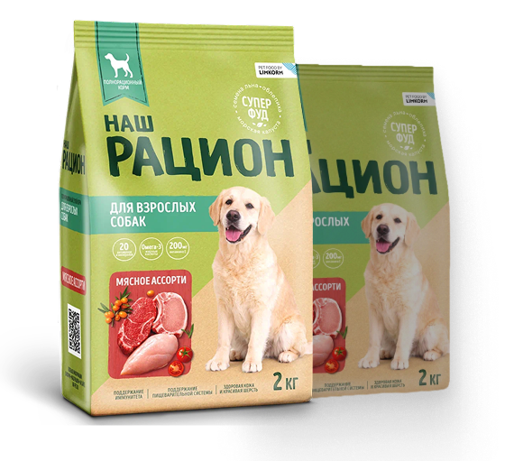

«Наш Рацион»: Экспертный стандарт в каждой миске
«Наш Рацион» — это выбор рационального владельца, который доверяет экспертизе LIMKORM. Мы сделали качественное безопасное питание доступным, чтобы каждый питомец мог получать экспертную заботу каждый день.

Качество LIMKORM: экспертная база для всех
В основе «Наш Рацион» лежат те же принципы, что и в премиальных линейках нашего холдинга. Мы не просто производим корм, мы создаем экспертную базу ежедневного здоровья. Используя собственные производственные мощности и строгий контроль на каждом этапе — от выбора сырья до упаковки — мы гарантируем, что даже в сегменте «стандарт» продукт соответствует высоким стандартам безопасности и нутрициологической эффективности.

Полный спектр ежедневных потребностей
«Наш Рацион» — это полноценное решение, закрывающее все физиологические нужды питомца в течение дня. Мы сбалансировали формулу так, чтобы животное получало необходимый уровень энергии и нутриентов для поддержания метаболического здоровья и активного образа жизни.

Технологическое единство: ProStor+ и сила суперфудов
Мы повышаем ценность повседневного рациона за счет внедрения наших авторских разработок, которые обычно встречаются в более дорогих сегментах:
Фундаментальный инструмент для поддержания микробиома, обеспечивающий стабильность пищеварения и полноценное усвоение питательных веществ.
Семена льна, спирулина и морская капуста — это не просто ингредиенты, а природные катализаторы, обеспечивающие поддержку иммунитета, здоровый блеск шерсти и правильную работу эндокринной системы
Мы убеждены: высокое качество питания не должно быть роскошью. «Наш Рацион» — это наш ответ на запрос владельцев, которые ищут для своих питомцев надежный, сбалансированный и доступный корм, созданный ведущими нутрициологами.